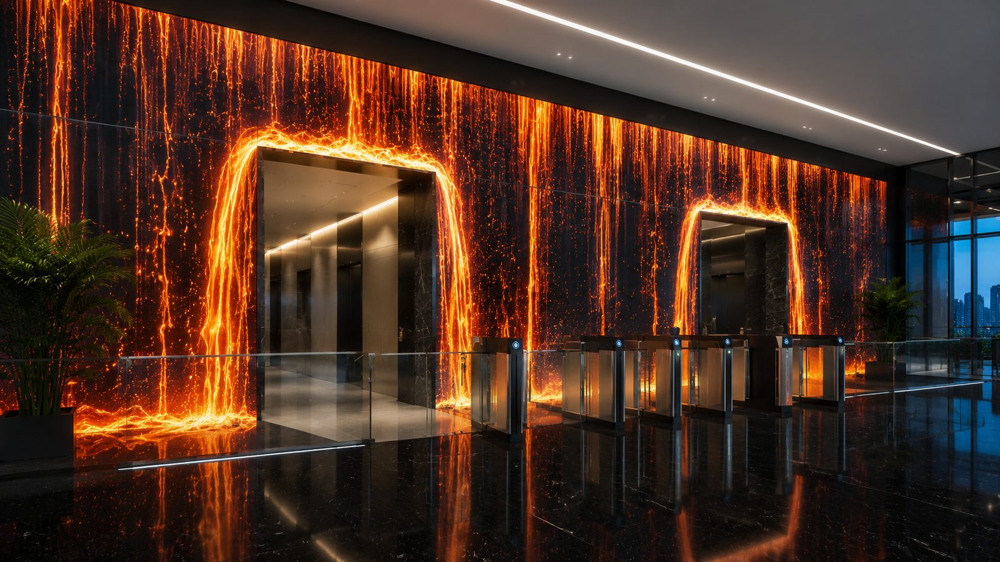
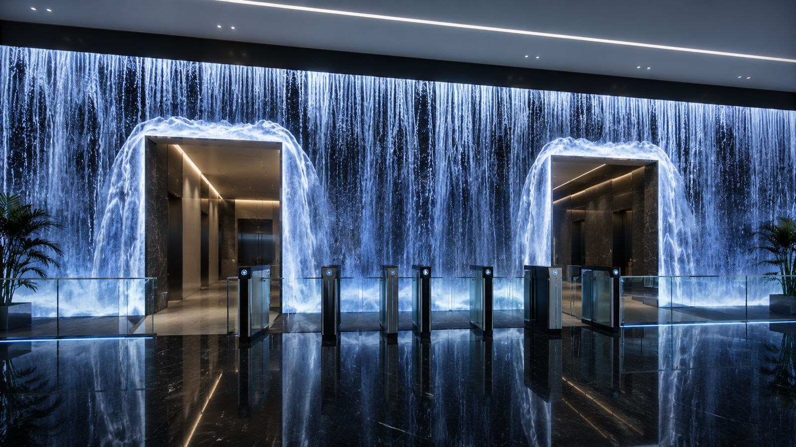
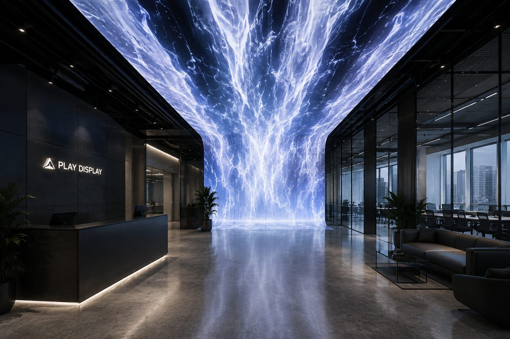

Museums
Immersion Starts at the Door
When the first impression has to set the mood for the whole space, instantly.
What it solves
- Turns the entrance into a scene in its own right.
- Delivers the brand's atmosphere before the main route even begins.
- Creates a strong visual landmark.
How it works
LED surfaces are built into the frame of doors and passages. Water, light, fire or abstract graphics stream around the opening and change what crossing it feels like.
I crossed a line and came out in another world.
Mechanics
- LED screens integrated into the architecture
- Content shaped to the opening
- Light and sound
- Response to approach
- Indoor or outdoor build
Why this way
Walking through a doorway is already a natural change of state. When architecture underlines that moment with movement and light, people arrive emotionally prepared for what comes next. The entrance becomes part of the narrative instead of a piece of infrastructure.
Where it applies
Museums • offices • showrooms • exhibitions • shopping centers • public spaces
What it can show
From a compact doorway portal to a large facade installation. Content can follow the season, the event, the brand or the story of the place.


